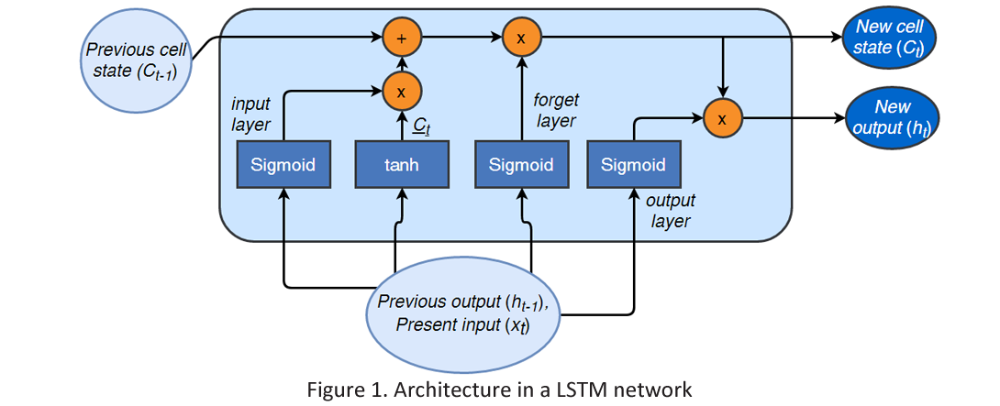

Last updated on June 26, 2026 am
本文为 SJTU-CS3612 机器学习课程的期末划重点 .
要求说明：了解 < 知道 < 掌握 < 重点掌握 .
Preliminary: Math
Covariance matrix
给定矩阵 X n × p X_{n \times p} X n × p x k i x_{ki} x ki k k k i i i 协方差矩阵(Covariance matrix) 为：Σ = ( c i j ) p × p \Sigma = (c_{ij})_{p \times p} Σ = ( c ij ) p × p
c i j = E k [ ( x k i − E i ′ [ x k i ′ ] ) ( x k j − E j ′ [ x k j ′ ] ) ] c_{i j}=\mathbb{E}_k\left[\left(x_{k i}-\mathbb{E}_{i^{\prime}}\left[x_{k i^{\prime}}\right]\right)\left(x_{k j}-\mathbb{E}_{j^{\prime}}\left[x_{k j^{\prime}}\right]\right)\right]
c ij = E k [ ( x ki − E i ′ [ x k i ′ ] ) ( x kj − E j ′ [ x k j ′ ] ) ]
对于两个随机向量 X X X Y Y Y
Cov ( X , Y ) = E [ ( X − E ( X ) ) ( Y − E ( Y ) ) ⊤ ] \operatorname{Cov}(X, Y) = \mathbb{E}\left[(X - \mathbb{E}(X))(Y - \mathbb{E}(Y))^\top\right]
Cov ( X , Y ) = E [ ( X − E ( X )) ( Y − E ( Y ) ) ⊤ ]
Matrix derivative
设 Y = ( y i ) m × 1 , X = ( x j ) n × 1 Y = (y_i)_{m \times 1}, X = (x_j)_{n \times 1} Y = ( y i ) m × 1 , X = ( x j ) n × 1 Y = h ( X ) Y = h(X) Y = h ( X )
∂ Y ∂ X ⊤ = ( ∂ y i ∂ x j ) m × n \frac{\partial Y}{\partial X^{\top}}=\left(\frac{\partial y_i}{\partial x_j}\right)_{m \times n}
∂ X ⊤ ∂ Y = ( ∂ x j ∂ y i ) m × n
对于 Y = A X Y = AX Y = A X
∂ Y ∂ X ⊤ = A \frac{\partial Y}{\partial X^{\top}}=A
∂ X ⊤ ∂ Y = A
若 Y = h ( X ) Y = h(X) Y = h ( X ) X = g ( Z ) X = g(Z) X = g ( Z )
∂ Y ∂ Z ⊤ = ∂ Y ∂ X ⊤ ∂ X ∂ Z ⊤ \frac{\partial Y}{\partial Z^{\top}}=\frac{\partial Y}{\partial X^{\top}} \frac{\partial X}{\partial Z^{\top}}
∂ Z ⊤ ∂ Y = ∂ X ⊤ ∂ Y ∂ Z ⊤ ∂ X
此处需要掌握基本的矩阵求导，会出现在反向传播推导中.
Lecture 1: Linear Model
假设有 n n n { x i 1 , x i 2 , … , x i p , y i } i = 1 n \{x_{i1}, x_{i2}, \dots, x_{ip}, y_i\}_{i=1}^n { x i 1 , x i 2 , … , x i p , y i } i = 1 n
y = X ⊤ β + ε \mathbf{y}=\mathbf{X}^{\top} \boldsymbol{\beta}+\boldsymbol{\varepsilon}
y = X ⊤ β + ε
其中
X ⊤ = [ x 1 ⊤ x 2 ⊤ ⋮ x n ⊤ ] = [ 1 x 11 ⋯ x 1 p 1 x 21 ⋯ x 2 p ⋮ ⋮ ⋱ ⋮ 1 x n 1 ⋯ x n p ] , y = [ y 1 y 2 ⋮ y n ] , β = [ β 0 β 1 ⋮ β p ] , ε = [ ε 1 ε 2 ⋮ ε n ] \mathbf{X}^\top =\begin{bmatrix}
\mathbf{x}_1^{\top} \\
\mathbf{x}_2^{\top} \\
\vdots \\
\mathbf{x}_n^{\top}
\end{bmatrix}=\begin{bmatrix}
1 & x_{11} & \cdots & x_{1 p} \\
1 & x_{21} & \cdots & x_{2 p} \\
\vdots & \vdots & \ddots & \vdots \\
1 & x_{n 1} & \cdots & x_{n p}
\end{bmatrix}, \quad \mathbf{y}=\begin{bmatrix}
y_1 \\
y_2 \\
\vdots \\
y_n
\end{bmatrix}, \quad
\boldsymbol{\beta}=\begin{bmatrix}
\beta_0 \\
\beta_1 \\
\vdots \\
\beta_p
\end{bmatrix}, \quad \boldsymbol{\varepsilon}=\begin{bmatrix}
\varepsilon_1 \\
\varepsilon_2 \\
\vdots \\
\varepsilon_n
\end{bmatrix}
X ⊤ = x 1 ⊤ x 2 ⊤ ⋮ x n ⊤ = 1 1 ⋮ 1 x 11 x 21 ⋮ x n 1 ⋯ ⋯ ⋱ ⋯ x 1 p x 2 p ⋮ x n p , y = y 1 y 2 ⋮ y n , β = β 0 β 1 ⋮ β p , ε = ε 1 ε 2 ⋮ ε n
此处需要掌握线性模型的基本形式，并注意：
样本 x i \mathbf{x}_i x i ε \boldsymbol{\varepsilon} ε
1.2 Logistic regression
假设有 n n n { ( X i , y i ) } i = 1 n \{(X_i, y_i)\}_{i=1}^n {( X i , y i ) } i = 1 n y i ∈ { 0 , 1 } y_i \in \{0, 1\} y i ∈ { 0 , 1 } X i X_i X i
Pr ( y i = 1 ∣ X i ) = p i , Pr ( y i = 0 ∣ X i ) = 1 − p i \operatorname{Pr}(y_i = 1|X_i) = p_i, \quad \operatorname{Pr}(y_i = 0|X_i) = 1 - p_i
Pr ( y i = 1∣ X i ) = p i , Pr ( y i = 0∣ X i ) = 1 − p i
Logistic regression 的分类公式是：
logit ( p i ) = log p i 1 − p i = X i ⊤ β \operatorname{logit}\left(p_i\right)=\log \frac{p_i}{1-p_i}=X_i^{\top} \beta
logit ( p i ) = log 1 − p i p i = X i ⊤ β
即
p i = sigmoid ( X i ⊤ β ) = e X i ⊤ β 1 + e X i ⊤ β = 1 1 + e − X i ⊤ β p_i=\operatorname{sigmoid}\left(X_i^{\top} \beta\right)=\frac{e^{X_i^{\top} \beta}}{1+e^{X_i^{\top} \beta}}=\frac{1}{1+e^{-X_i^{\top} \beta}}
p i = sigmoid ( X i ⊤ β ) = 1 + e X i ⊤ β e X i ⊤ β = 1 + e − X i ⊤ β 1
此处需要掌握 p i p_i p i
logit ( a ) = log a 1 − a \operatorname{logit}\left(a\right) = \log \frac{a}{1-a} logit ( a ) = log 1 − a a
sigmoid ( a ) = e a 1 + e a = 1 1 + e − a \operatorname{sigmoid}\left(a\right) = \frac{e^a}{1+e^a} = \frac{1}{1+e^{-a}} sigmoid ( a ) = 1 + e a e a = 1 + e − a 1
设每个样本的真实标签为 y i ∗ y_i^* y i ∗
Pr ( y i = y i ∗ ∣ X i ) = p i y i ∗ ( 1 − p i ) 1 − y i ∗ = e y i ∗ X i ⊤ β 1 + e X i ⊤ β \operatorname{Pr}\left(y_i=y_i^* | X_i\right)=p_i^{y_i^*}\left(1-p_i\right)^{1-y_i^*}=\frac{e^{y_i^* X_i^{\top} \beta}}{1+e^{X_i^{\top} \beta}}
Pr ( y i = y i ∗ ∣ X i ) = p i y i ∗ ( 1 − p i ) 1 − y i ∗ = 1 + e X i ⊤ β e y i ∗ X i ⊤ β
采用最大似然估计(MLE) ，目标是所有样本全部预测正确的概率最大，即
Pr ( β ) = ∏ i = 1 n Pr ( y i = y i ∗ ∣ X i ) = ∏ i = 1 n e y i ∗ X i ⊤ β 1 + e X i ⊤ β \operatorname{Pr}(\beta)=\prod_{i=1}^n \operatorname{Pr}\left(y_i=y_i^* | X_i\right)=\prod_{i=1}^n \frac{e^{y_i^* X_i^{\top} \beta}}{1+e^{X_i^{\top} \beta}}
Pr ( β ) = i = 1 ∏ n Pr ( y i = y i ∗ ∣ X i ) = i = 1 ∏ n 1 + e X i ⊤ β e y i ∗ X i ⊤ β
取对数，得
log Pr ( β ) = ∑ i = 1 n [ y i ∗ X i ⊤ β − log ( 1 + exp X i ⊤ β ) ] \log \operatorname{Pr}(\beta)=\sum_{i=1}^n\left[y_i^* X_i^{\top} \beta-\log \left(1+\exp X_i^{\top} \beta\right)\right]
log Pr ( β ) = i = 1 ∑ n [ y i ∗ X i ⊤ β − log ( 1 + exp X i ⊤ β ) ]
即优化目标为
arg max β Pr ( β ) ≡ arg max β log Pr ( β ) \argmax_\beta \operatorname{Pr}(\beta) \equiv \argmax_\beta \log \operatorname{Pr}(\beta)
β arg max Pr ( β ) ≡ β arg max log Pr ( β )
此处需要掌握 MLE 的连乘形式及取对数后的求和形式，会列式推导即可.
1.3 Classification
如果分类标签 y i ∈ { + 1 , − 1 } y_i \in \{+1, -1\} y i ∈ { + 1 , − 1 }
Pr ( y i = + 1 ∣ X i ) = 1 1 + e − X i ⊤ β , Pr ( y i = − 1 ∣ X i ) = 1 1 + e X i ⊤ β \operatorname{Pr}(y_i = +1|X_i) = \frac{1}{1+e^{-X_i^{\top} \beta}}, \quad
\operatorname{Pr}(y_i = -1|X_i) = \frac{1}{1+e^{X_i^{\top} \beta}}
Pr ( y i = + 1∣ X i ) = 1 + e − X i ⊤ β 1 , Pr ( y i = − 1∣ X i ) = 1 + e X i ⊤ β 1
合并起来，得到
p ( y i ) = 1 1 + e − y i X i ⊤ β = sigmoid ( y i X i ⊤ β ) p\left(y_i\right)=\frac{1}{1+e^{-y_iX_i^{\top} \beta}} = \operatorname{sigmoid}\left(y_i X_i^\top \beta\right)
p ( y i ) = 1 + e − y i X i ⊤ β 1 = sigmoid ( y i X i ⊤ β )
此处需要掌握分类问题下 y i y_i y i { + 1 , − 1 } \{+1, -1\} { + 1 , − 1 } p ( y i ) p(y_i) p ( y i )
1.4 Perceptron
感知机可以表示为：
y i = sign ( X i ⊤ β ) y_i=\operatorname{sign}\left(X_i^{\top} \beta\right)
y i = sign ( X i ⊤ β )
其中 sign ( ⋅ ) \operatorname{sign}(\cdot) sign ( ⋅ )
1.5 Three models
机器学习模型分为三类：
Generative models(生成式模型) ：建模联合概率分布 p θ ( X , Y ) p_\theta(X, Y) p θ ( X , Y ) Discriminative models(判别式模型) ：建模条件概率分布 p θ ( Y ∣ X ) p_\theta(Y|X) p θ ( Y ∣ X ) Descriptive models(描述式模型) ：建模输入数据分布 p θ ( X ) p_\theta(X) p θ ( X )
Softmax 函数用于计算分类为每一类的概率，即：
p θ ( y = k ∣ X ) = 1 Z ( θ ) exp ( f θ ( k ) ( X ) ) p_\theta(y=k | X)= \frac{1}{Z(\theta)} \exp (f_\theta^{(k)}(X))
p θ ( y = k ∣ X ) = Z ( θ ) 1 exp ( f θ ( k ) ( X ))
其中
Z ( θ ) = ∑ k exp ( f θ ( k ) ( X ) ) Z(\theta) = \sum_k \exp (f_\theta^{(k)}(X))
Z ( θ ) = k ∑ exp ( f θ ( k ) ( X ))
1.7 Loss functions
为了从数据集 { ( X i , y i ) } i = 1 n \left\{\left(X_i, y_i\right)\right\}_{i=1}^n { ( X i , y i ) } i = 1 n β \beta β
L ( β ) = ∑ i = 1 n L ( y i , X i ⊤ β ) \mathscr{L}(\beta)=\sum_{i=1}^n L\left(y_i, X_i^{\top} \beta\right)
L ( β ) = i = 1 ∑ n L ( y i , X i ⊤ β )
其中 L ( y i , X i ⊤ β ) L\left(y_i, X_i^{\top} \beta\right) L ( y i , X i ⊤ β )
从最大化对数似然的角度，一种经典的损失函数设计是：
L ( y i , X i ⊤ β ) = − log Pr ( y i ∣ X i , β ) L\left(y_i, X_i^{\top} \beta\right) = -\log \operatorname{Pr}(y_i | X_i, \beta)
L ( y i , X i ⊤ β ) = − log Pr ( y i ∣ X i , β )
对于 logistic regression，其中 y i ∈ { 0 , 1 } y_i \in \{0, 1\} y i ∈ { 0 , 1 }
L ( y i , X i ⊤ β ) = − [ y i X i ⊤ β − log ( 1 + exp ( X i ⊤ β ) ) ] L(y_i, X_i^{\top} \beta)=-\left[y_i X_i^{\top} \beta-\log (1+\exp (X_i^{\top} \beta))\right]
L ( y i , X i ⊤ β ) = − [ y i X i ⊤ β − log ( 1 + exp ( X i ⊤ β )) ]
而对于 y i ∈ { − 1 , 1 } y_i \in \{-1, 1\} y i ∈ { − 1 , 1 }
L ( y i , X i ⊤ β ) = log [ 1 + exp ( − y i X i ⊤ β ) ] L(y_i, X_i^{\top} \beta)= \log \left[1+\exp \left(-y_i X_i^{\top} \beta\right)\right]
L ( y i , X i ⊤ β ) = log [ 1 + exp ( − y i X i ⊤ β ) ]
该损失被称为 logistic loss .
此处需要掌握将负对数似然作为损失函数的方法，以及了解 logistic loss 并不是 logistic regression 推出的损失函数.
MSE(Mean Square Error) loss 也是一种经典的损失函数：
L ( y i , X i ⊤ β ) = ( y i − X i ⊤ β ) 2 L(y_i, X_i^{\top} \beta)=\left(y_i-X_i^{\top} \beta\right)^2
L ( y i , X i ⊤ β ) = ( y i − X i ⊤ β ) 2
Huber loss 是对 MSE loss 的改进：
L ( y i , X i ⊤ β ) = { 1 2 ( y i − X i ⊤ β ) 2 , if ∣ y i − X i ⊤ β ∣ ≤ δ δ ∣ y i − X i ⊤ β ∣ − δ 2 2 , otherwise L(y_i, X_i^{\top} \beta)= \begin{cases}\frac{1}{2}(y_i-X_i^{\top} \beta)^2, & \text { if }|y_i-X_i^{\top} \beta| \leq \delta \\ \delta|y_i-X_i^{\top} \beta|-\frac{\delta^2}{2}, & \text { otherwise }\end{cases}
L ( y i , X i ⊤ β ) = { 2 1 ( y i − X i ⊤ β ) 2 , δ ∣ y i − X i ⊤ β ∣ − 2 δ 2 , if ∣ y i − X i ⊤ β ∣ ≤ δ otherwise
而对于分类问题，几种经典的损失函数包括：
Logistic loss = log ( 1 + exp ( − y i X i ⊤ β ) ) , Exponential loss = exp ( − y i X i ⊤ β ) , Hinge loss = max ( 0 , 1 − y i X i ⊤ β ) , Zero-one loss = 1 ( y i X i ⊤ β < 0 ) \begin{aligned}
& \text { Logistic loss }=\log \left(1+\exp \left(-y_i X_i^{\top} \beta\right)\right), \\
& \text { Exponential loss }=\exp \left(-y_i X_i^{\top} \beta\right), \\
& \text { Hinge loss }=\max \left(0,1-y_i X_i^{\top} \beta\right), \\
& \text { Zero-one loss }=\mathbf{1}\left(y_i X_i^{\top} \beta<0\right)
\end{aligned}
Logistic loss = log ( 1 + exp ( − y i X i ⊤ β ) ) , Exponential loss = exp ( − y i X i ⊤ β ) , Hinge loss = max ( 0 , 1 − y i X i ⊤ β ) , Zero-one loss = 1 ( y i X i ⊤ β < 0 )
此处需要掌握列出的几种损失函数的形式，其中 huber loss 了解即可.
1.8 Least Squares
对于线性模型 Y = X β + ε Y = X\beta + \varepsilon Y = Xβ + ε
β ^ = arg min β ∥ Y − X β ∥ 2 \hat{\beta}=\argmin_\beta\Vert Y-X \beta\Vert^2
β ^ = β arg min ∥ Y − Xβ ∥ 2
可以解出：
β ^ = ( X ⊤ X ) − 1 X ⊤ Y \hat{\beta}=\left(X^\top X\right)^{-1} X^\top Y
β ^ = ( X ⊤ X ) − 1 X ⊤ Y
1.9 Kullback-Leibler divergence and cross entropy
对于一个分布 p ( x ) p(x) p ( x ) 熵(Entropy) 的定义为：
H ( p ) = E p [ − log p ( X ) ] = ∑ x p ( x ) [ − log p ( x ) ] H(p)=\mathbb{E}_p[-\log p(X)]=\sum_x p(x)[-\log p(x)]
H ( p ) = E p [ − log p ( X )] = x ∑ p ( x ) [ − log p ( x )]
对于两个分布 p ( x ) p(x) p ( x ) q ( x ) q(x) q ( x ) 交叉熵(Cross entropy) 定义为：
C E ( p ∣ q ) = E p [ − log q ( X ) ] = − ∑ x p ( x ) log q ( x ) \mathrm{CE}(p | q) = \mathbb{E}_p[-\log q(X)]=-\sum_x p(x) \log q(x)
CE ( p ∣ q ) = E p [ − log q ( X )] = − x ∑ p ( x ) log q ( x )
定义 KL 散度(Kullback-Leibler divergence) 为交叉熵和熵的差，即：
K L ( p ∣ q ) = C E ( p ∣ q ) − H ( p ) = E p [ log p ( X ) q ( X ) ] = ∑ x p ( x ) log p ( x ) q ( x ) \mathrm{KL}(p | q) = \mathrm{CE}(p | q) - H(p) = \mathbb{E}_p\left[\log \frac{p(X)}{q(X)}\right] = \sum_x p(x) \log \frac{p(x)}{q(x)}
KL ( p ∣ q ) = CE ( p ∣ q ) − H ( p ) = E p [ log q ( X ) p ( X ) ] = x ∑ p ( x ) log q ( x ) p ( x )
KL 散度衡量了两个分布之间的不相似度，即 KL 散度越小，两个分布的相似度越高.
1.10 Maximum likelihood
最大似然估计(MLE) 等价于最小化预测分布和真实数据分布的 KL 散度 ，即：
max θ ∑ i = 1 n log p θ ( y i ∣ X i ) ≡ min θ K L ( P data ( y ∣ X ) ∣ p θ ( y ∣ X ) ) \max _\theta \sum_{i=1}^n \log p_\theta(y_i | X_i) \equiv \min _\theta \mathrm{KL}\left(P_{\text {data}}(y | X) | p_\theta(y | X)\right)
θ max i = 1 ∑ n log p θ ( y i ∣ X i ) ≡ θ min KL ( P data ( y ∣ X ) ∣ p θ ( y ∣ X ) )
其中 P data P_\text{data} P data
1.12 Stochastic gradient descent (SGD)
考虑使用梯度下降法(Gradient descent algorithm) 进行优化. 设模型参数为 θ \theta θ
L ( θ ) = 1 n ∑ i = 1 n L i ( θ ) \mathscr{L}(\theta)=\frac{1}{n} \sum_{i=1}^n L_i(\theta)
L ( θ ) = n 1 i = 1 ∑ n L i ( θ )
再更新参数：
θ t + 1 = θ t − η t L ′ ( θ t ) \theta_{t+1}=\theta_t-\eta_t \mathscr{L}^{\prime}\left(\theta_t\right)
θ t + 1 = θ t − η t L ′ ( θ t )
其中 η t \eta_t η t t t t
由于在所有样本上计算损失过于耗时，SGD(Stochastic gradient descent) 方法每次随机选取一个小批量(mini-batch)样本，在这些样本上计算损失并更新参数，即：
θ t + 1 = θ t − η t ∑ i ∈ batch ⊂ allSamples L i ′ ( θ t ) \theta_{t+1}=\theta_t-\eta_t \sum_{i \in \text {batch}\subset\text{allSamples }} L_i^{\prime}\left(\theta_t\right)
θ t + 1 = θ t − η t i ∈ batch ⊂ allSamples ∑ L i ′ ( θ t )
为了解决优化过程中的振荡问题(从而提高优化效率)，在 SGD 中引入动量(Momentum) ，其更新公式为：
v t = γ v t − 1 + η t g t θ t = θ t − 1 − v t \begin{aligned}
& v_t=\gamma v_{t-1}+\eta_t g_t \\
& \theta_t=\theta_{t-1}-v_t
\end{aligned}
v t = γ v t − 1 + η t g t θ t = θ t − 1 − v t
其中 g t g_t g t v t v_t v t
1.13 Gradient of log-likelihood
对于判别式模型，设 softmax 层之前的网络输出为 f θ ( X ) f_\theta(X) f θ ( X ) p p p
∂ ∂ θ log p θ ( y ∣ X ) = ∂ ∂ θ f θ ( X ) ⊤ ( Y − p ) \frac{\partial}{\partial \theta} \log p_\theta(y | X) =\frac{\partial}{\partial \theta} f_\theta(X)^{\top}(Y-p)
∂ θ ∂ log p θ ( y ∣ X ) = ∂ θ ∂ f θ ( X ) ⊤ ( Y − p )
其中 Y Y Y y y y 判别式模型从误差中学习(learn from errors) .
对于描述式模型，设网络输出为 f θ ( X ) f_\theta(X) f θ ( X )
∂ ∂ θ log p θ ( X ) = ∂ ∂ θ f θ ( X ) − E θ [ ∂ ∂ θ f θ ( X ) ] \frac{\partial}{\partial \theta} \log p_\theta(X) =\frac{\partial}{\partial \theta} f_\theta(X)-\mathbb{E}_\theta\left[\frac{\partial}{\partial \theta} f_\theta(X)\right]
∂ θ ∂ log p θ ( X ) = ∂ θ ∂ f θ ( X ) − E θ [ ∂ θ ∂ f θ ( X ) ]
可以理解为，模型的目标是：增大真实样本分数与从当前模型分布 p θ p_\theta p θ 描述式模型从梦中学习(learn from dream) .
特别地，对于 logistic regression，对数似然函数是：
l ( β ) = log L ( β ) = ∑ i = 1 n [ y i X i ⊤ β − log ( 1 + exp X i ⊤ β ) ] l(\beta)=\log L(\beta)=\sum_{i=1}^n\left[y_i X_i^{\top} \beta-\log \left(1+\exp X_i^{\top} \beta\right)\right]
l ( β ) = log L ( β ) = i = 1 ∑ n [ y i X i ⊤ β − log ( 1 + exp X i ⊤ β ) ]
为了最大化 l ( β ) l(\beta) l ( β )
l ′ ( β ) = ∑ i = 1 n [ y i X i − e X i ⊤ β 1 + e X i ⊤ β X i ] = ∑ i = 1 n ( y i − p i ) X i l^{\prime}(\beta)=\sum_{i=1}^n\left[y_i X_i-\frac{e^{X_i^{\top} \beta}}{1+e^{X_i^{\top} \beta}} X_i\right]=\sum_{i=1}^n\left(y_i-p_i\right) X_i
l ′ ( β ) = i = 1 ∑ n [ y i X i − 1 + e X i ⊤ β e X i ⊤ β X i ] = i = 1 ∑ n ( y i − p i ) X i
从而利用该梯度来更新 β \beta β
β ( t + 1 ) = β ( t ) + γ t ∑ i = 1 n ( y i − p i ) X i \beta^{(t+1)}=\beta^{(t)}+\gamma_t \sum_{i=1}^n\left(y_i-p_i\right) X_i
β ( t + 1 ) = β ( t ) + γ t i = 1 ∑ n ( y i − p i ) X i
1.14 Langevin
在梯度下降算法中，加入随机噪声扰动，有利于跳出局部最优解，这就是 Langevin dynamics . 以参数更新为例，引入噪声的更新公式变为：
θ t + 1 = θ t − η t L ′ ( θ t ) + λ ε \theta_{t+1}=\theta_t-\eta_t \mathscr{L}^{\prime}\left(\theta_t\right) + \lambda \varepsilon
θ t + 1 = θ t − η t L ′ ( θ t ) + λ ε
此处需要知道：在梯度上加噪声可以防止陷入局部最小值.
1.17 Linear Discriminant Analysis (LDA)
LDA 的目标是学习一个线性分类器，将 X i X_i X i z = X i ⊤ β z = X_i^\top \beta z = X i ⊤ β
设正类样本为 Ω + \Omega^+ Ω + Ω − \Omega^- Ω −
∀ X i ∈ Ω + , p ( X i ∣ y = + 1 ) ∼ N ( μ + , Σ + ) \forall X_i \in \Omega^{+}, p\left(X_i | y=+1\right) \sim \mathrm{N}\left(\mu^{+}, \Sigma^{+}\right) ∀ X i ∈ Ω + , p ( X i ∣ y = + 1 ) ∼ N ( μ + , Σ + ) ∀ X i ∈ Ω − , p ( X i ∣ y = − 1 ) ∼ N ( μ − , Σ − ) \forall X_i \in \Omega^{-}, p\left(X_i | y=-1\right) \sim \mathrm{N}\left(\mu^{-}, \Sigma^{-}\right) ∀ X i ∈ Ω − , p ( X i ∣ y = − 1 ) ∼ N ( μ − , Σ − )
那么优化目标是最大化
S = σ between 2 σ within 2 = β ⊤ S B β β ⊤ S W β S =\frac{\sigma_{\text {between }}^2}{\sigma_{\text {within }}^2} =\frac{\beta^{\top} S_B \beta}{\beta^{\top} S_W \beta}
S = σ within 2 σ between 2 = β ⊤ S W β β ⊤ S B β
其中
S B = ( μ + − μ − ) ( μ + − μ − ) ⊤ S W = n p o s Σ + + n n e g Σ − \begin{aligned}
S_B & =(\mu^{+}-\mu^{-})(\mu^{+}-\mu^{-})^{\top} \\
S_W & =n_{\mathrm{pos}} \Sigma^{+}+n_{\mathrm{neg}} \Sigma^{-}
\end{aligned}
S B S W = ( μ + − μ − ) ( μ + − μ − ) ⊤ = n pos Σ + + n neg Σ −
不妨设 β ⊤ S W β = 1 \beta^\top S_W \beta = 1 β ⊤ S W β = 1
max β β ⊤ S B β , s.t. β ⊤ S W β = 1 \max _\beta \beta^{\top} S_B \beta, \quad \text { s.t. } \quad \beta^{\top} S_W \beta=1
β max β ⊤ S B β , s.t. β ⊤ S W β = 1
使用 Lagrange 乘子法，解得：
β ∝ S W − 1 ( μ + − μ − ) \beta \propto S_W^{-1}(\mu^{+}-\mu^{-})
β ∝ S W − 1 ( μ + − μ − )
此处需要掌握 LDA 的目标函数和结论，不要求推导.
Lecture 2: Support Vector Machines
2.1 Margin and support vectors
考虑分类问题 y i ∈ { − 1 , + 1 } y_i \in\{-1,+1\} y i ∈ { − 1 , + 1 }
y ^ = sign ( w ⊤ x + b ) = { + 1 , w ⊤ x + b ≥ 0 − 1 , w ⊤ x + b < 0 \hat{y}=\operatorname{sign}(w^{\top} x+b)= \begin{cases}+1, & w^{\top} x+b \geq 0 \\ -1, & w^{\top} x+b<0\end{cases}
y ^ = sign ( w ⊤ x + b ) = { + 1 , − 1 , w ⊤ x + b ≥ 0 w ⊤ x + b < 0
定义 margin：
γ i = y i ( w ⊤ x i + b ) \gamma_i=y_i(w^{\top} x_i+b)
γ i = y i ( w ⊤ x i + b )
γ i \gamma_i γ i γ i > 0 \gamma_i > 0 γ i > 0 γ i < 0 \gamma_i < 0 γ i < 0
对 w w w
γ i = y i ( w ⊤ X i + b ) ∥ w ∥ \gamma_i=\frac{y_i(w^{\top} X_i+b)}{\|w\|}
γ i = ∥ w ∥ y i ( w ⊤ X i + b )
此时，γ i \gamma_i γ i X i X_i X i w ⊤ x + b = 0 w^\top x+b = 0 w ⊤ x + b = 0
此处需要掌握 margin 的定义、margin 值与分类正确的关系以及物理意义.
2.2 Margin classifier
由 SVM 的优化目标，可以解出：
w = ∑ i : α i > 0 α i y i X i w = \sum_{i:\alpha_i > 0} \alpha_i y_i X_i
w = i : α i > 0 ∑ α i y i X i
通常将对应 α i > 0 \alpha_i > 0 α i > 0 X i X_i X i w w w
此处需要掌握关于 w w w
2.3 Kernel-based SVM
对于 SVM，其 inference 过程可以写为：
w ⊤ X i + b = ∑ j : α j > 0 α j y j ⟨ X j , X i ⟩ + b w^{\top} X_i+b = \sum_{j: \alpha_j>0} \alpha_j y_j\left\langle X_j, X_i\right\rangle+b
w ⊤ X i + b = j : α j > 0 ∑ α j y j ⟨ X j , X i ⟩ + b
如果将 x x x ϕ ( x ) \phi(x) ϕ ( x )
w ⊤ ϕ ( X i ) + b = ∑ j : α j > 0 α j y j K ( X j , X i ) + b w^{\top} \phi\left(X_i\right)+b =\sum_{j: \alpha_j>0} \alpha_j y_j K\left(X_j, X_i\right)+b
w ⊤ ϕ ( X i ) + b = j : α j > 0 ∑ α j y j K ( X j , X i ) + b
其中
K ( X i , X j ) = def ϕ ( X i ) ⊤ ϕ ( X j ) K\left(X_i, X_j\right) \stackrel{\text { def }}{=} \phi\left(X_i\right)^{\top} \phi\left(X_j\right)
K ( X i , X j ) = def ϕ ( X i ) ⊤ ϕ ( X j )
被称为核(Kernel) . 这表明，我们只需要知道 K ( X i , X j ) K(X_i, X_j) K ( X i , X j ) ϕ ( X i ) \phi(X_i) ϕ ( X i )
此处需要理解核函数的定义及作用，即：将 w ⊤ ϕ ( X i ) + b w^{\top} \phi\left(X_i\right)+b w ⊤ ϕ ( X i ) + b K ( X i , X j ) K(X_i, X_j) K ( X i , X j )
(Mercer 定理) K K K
对称性 ：K ( X i , X j ) = K ( X j , X i ) K\left(X_i, X_j\right)=K\left(X_j, X_i\right) K ( X i , X j ) = K ( X j , X i )
半正定 ：设核矩阵 K K K K i j = K ( X i , X j ) K_{ij} = K(X_i, X_j) K ij = K ( X i , X j ) ∀ z , z ⊤ K z ≥ 0 \forall z, z^\top K z \ge 0 ∀ z , z ⊤ Kz ≥ 0
2.4 Common kernels
RBF 核，即 Gaussian 核，其形式是：
K ( X i , X j ) = exp ( − ∥ X i − X j ∥ 2 2 σ 2 ) K\left(X_i, X_j\right)=\exp \left(-\frac{\left\|X_i-X_j\right\|^2}{2 \sigma^2}\right)
K ( X i , X j ) = exp ( − 2 σ 2 ∥ X i − X j ∥ 2 )
2.5 With outliers
在不保证完全分类正确的情况下，SVM 的目标函数是：
min ξ , w , b 1 2 ∥ w ∥ 2 + C ∑ i = 1 n ξ i s.t. y i ( w ⊤ X i + b ) ≥ 1 − ξ i , i = 1 , 2 , … , n ξ i ≥ 0 , i = 1 , 2 , … , n \begin{aligned}
\min _{\xi, w, b} \quad& \frac{1}{2}\|w\|^2+C \sum_{i=1}^n \xi_i \\
\text { s.t. } \quad & y_i\left(w^{\top} X_i+b\right) \geq 1-\xi_i, \quad i=1,2, \ldots, n \\
& \xi_i \geq 0, \quad i=1,2, \ldots, n
\end{aligned}
ξ , w , b min s.t. 2 1 ∥ w ∥ 2 + C i = 1 ∑ n ξ i y i ( w ⊤ X i + b ) ≥ 1 − ξ i , i = 1 , 2 , … , n ξ i ≥ 0 , i = 1 , 2 , … , n
这等价于
min ξ , w , b 1 2 ∥ w ∥ 2 + C ∑ i = 1 n max ( 0 , 1 − y i ( w ⊤ X i + b ) ) ⏟ Hinge loss \min _{\xi, w, b} \quad \frac{1}{2}\|w\|^2+C \sum_{i=1}^n \underbrace{\max \left(0,1-y_i\left(w^{\top} X_i+b\right)\right)}_\text{Hinge loss}
ξ , w , b min 2 1 ∥ w ∥ 2 + C i = 1 ∑ n Hinge loss max ( 0 , 1 − y i ( w ⊤ X i + b ) )
其中，惩罚 ∥ w ∥ \Vert w \Vert ∥ w ∥
此处需要掌握 SVM 目标函数的两种形式，以及惩罚 ∥ w ∥ \Vert w \Vert ∥ w ∥
由 KKT 条件，只有满足
y i ( w ⊤ X i + b ) ≤ 1 y_i\left(w^{\top} X_i+b\right) \le 1
y i ( w ⊤ X i + b ) ≤ 1
的样本，才有
α i > 0 \alpha_i > 0
α i > 0
这包含了分类面上、分类面之间以及错误分类的样本. 其余样本均有 α i = 0 \alpha_i = 0 α i = 0
此处需要掌握 α i > 0 \alpha_i > 0 α i > 0 α i = 0 \alpha_i = 0 α i = 0
Lecture 3: Kernels and Regularized Learning
3.1 Over-fitting & under-fitting
过拟合(over-fitting) 是指模型在训练样本上表现很好，但在测试样本上泛化能力较差的现象.
3.2 Ridge Regression
Ridge regression 引入惩罚项 λ ∥ β ∥ 2 \lambda\|\beta\|^2 λ ∥ β ∥ 2 λ > 0 \lambda > 0 λ > 0
ℓ ( β ) = ∥ Y − X β ∥ 2 + λ ∥ β ∥ 2 \ell(\beta)=\|Y-X \beta\|^2+\lambda\|\beta\|^2
ℓ ( β ) = ∥ Y − Xβ ∥ 2 + λ ∥ β ∥ 2
最终解得：
β ^ λ = ( X ⊤ X + λ I p ) − 1 X ⊤ Y \hat{\beta}_\lambda=\left(X^{\top} X+\lambda I_p\right)^{-1} X^{\top} Y
β ^ λ = ( X ⊤ X + λ I p ) − 1 X ⊤ Y
Ridge regression 的物理意义是：惩罚绝对值过大的参数权重，从而防止极少数特征维度主导预测结果 ，以提高模型的鲁棒性并防止过拟合.
此处需要掌握 Ridge regression 的损失函数、最终的解、物理意义.
3.3 Kernel Regression
将 Ridge regression 中的 x x x ϕ ( x ) \phi(x) ϕ ( x ) K ( x , x i ) = ϕ ( x ) ⊤ ϕ ( x i ) K(x, x_i) = \phi(x)^\top \phi(x_i) K ( x , x i ) = ϕ ( x ) ⊤ ϕ ( x i )
β = ∑ i c i ϕ ( x i ) \beta=\sum_i c_i \phi\left(x_i\right)
β = i ∑ c i ϕ ( x i )
从而在 inference 时，有：
f ( x ) = ϕ ( x ) ⊤ β = ∑ i = 1 n c i K ( x , x i ) f(x) = \phi(x)^\top \beta = \sum_{i=1}^n c_i K\left(x, x_i\right)
f ( x ) = ϕ ( x ) ⊤ β = i = 1 ∑ n c i K ( x , x i )
此处需要掌握 f ( x ) f(x) f ( x )
令 K i j = K ( x i , x j ) K_{ij} = K(x_i, x_j) K ij = K ( x i , x j )
ℓ ( c ) = ∥ Y − K c ∥ 2 + λ c ⊤ K c \ell(c)=\|Y-K c\|^2+\lambda c^{\top} K c
ℓ ( c ) = ∥ Y − Kc ∥ 2 + λ c ⊤ Kc
不难证明，惩罚项 c ⊤ K c = ∥ β ∥ 2 c^{\top} K c = \|\beta\|^2 c ⊤ Kc = ∥ β ∥ 2
c ^ λ = ( K + λ I n ) − 1 Y \hat{c}_\lambda=\left(K+\lambda I_n\right)^{-1} Y
c ^ λ = ( K + λ I n ) − 1 Y
事实上，神经网络的输出就可以看作特征映射 ϕ ( x ) \phi(x) ϕ ( x ) L 2 L_2 L 2
此处需要掌握 Kernel regression 的损失函数、最终的解，知道 Kernel regression 的本质是 Ridge regression 在核函数空间上的对应，知道 Kernel regression 在神经网络中的应用.
3.4 Spline Regression
设 x ∈ R x \in \mathbb{R} x ∈ R
f ( x ) = α 0 + ∑ j = 1 p α j max ( 0 , x − k j ) f(x)=\alpha_0+\sum_{j=1}^p \alpha_j \max \left(0, x-k_j\right)
f ( x ) = α 0 + j = 1 ∑ p α j max ( 0 , x − k j )
从而最小化的目标是：
∑ i = 1 n ∥ y i − α 0 − ∑ j = 1 p α j max ( 0 , x i − k j ) ∥ 2 + λ ∑ j = 1 p α j 2 \sum_{i=1}^n\|y_i-\alpha_0-\sum_{j=1}^p \alpha_j \max \left(0, x_i-k_j\right)\|^2+\lambda \sum_{j=1}^p \alpha_j^2
i = 1 ∑ n ∥ y i − α 0 − j = 1 ∑ p α j max ( 0 , x i − k j ) ∥ 2 + λ j = 1 ∑ p α j 2
事实上，线性层和 ReLU 的级联网络，本质上是用分段线性函数进行拟合.
此处了解 Spline regression 的定义即可.
3.5 Lasso regression
Lasso regression 的目标是最小化
ℓ ( β ) = 1 2 ∥ Y − X β ∥ ℓ 2 2 + λ ∥ β ∥ ℓ 1 \ell(\beta) = \frac{1}{2}\|\mathbf{Y}-\mathbf{X} \beta\|_{\ell_2}^2+\lambda\|\beta\|_{\ell_1}
ℓ ( β ) = 2 1 ∥ Y − X β ∥ ℓ 2 2 + λ ∥ β ∥ ℓ 1
除 p = 1 p=1 p = 1 β \beta β
Lasso regression 的物理意义是：学习稀疏的特征，使模型仅依赖少量真正重要的特征进行预测 ，从而提高模型的鲁棒性和泛化能力.
此处需要掌握 Lasso regression 的损失函数、是否存在解析解、物理意义.
当 p = 1 p = 1 p = 1
β ^ λ = sign ( γ ^ ) max ( 0 , ∣ γ ^ ∣ − λ / ∥ X ∥ ℓ 2 2 ) \hat{\beta}_\lambda=\operatorname{sign}(\hat{\gamma}) \max \left(0,|\hat{\gamma}|-\lambda /\|\mathbf{X}\|_{\ell_2}^2\right)
β ^ λ = sign ( γ ^ ) max ( 0 , ∣ γ ^ ∣ − λ /∥ X ∥ ℓ 2 2 )
其中 γ ^ = ⟨ Y , X ⟩ / ∥ X ∥ ℓ 2 2 \hat{\gamma}=\langle\mathbf{Y}, \mathbf{X}\rangle /\|\mathbf{X}\|_{\ell_2}^2 γ ^ = ⟨ Y , X ⟩ /∥ X ∥ ℓ 2 2 shrinkage )，再将较小的参数直接置零(selection ).
此处需要掌握 Lasso regression 的解相比于最小二乘解的区别，解的结果不需要掌握.
Lasso regression 有两种等价形式：
min ∥ Y − X β ∥ ℓ 2 2 / 2 subject to ∥ β ∥ ℓ 1 ≤ t \min ~ \|\mathbf{Y}-\mathbf{X} \beta\|_{\ell_2}^2 / 2 \quad \text{ subject to } \quad \|\beta\|_{\ell_1} \leq t
min ∥ Y − X β ∥ ℓ 2 2 /2 subject to ∥ β ∥ ℓ 1 ≤ t
min ∥ Y − X β ∥ ℓ 2 2 / 2 + λ ∥ β ∥ ℓ 1 \min ~ \|\mathbf{Y}-\mathbf{X} \beta\|_{\ell_2}^2 / 2+\lambda\|\beta\|_{\ell_1}
min ∥ Y − X β ∥ ℓ 2 2 /2 + λ ∥ β ∥ ℓ 1
此处需要掌握 Lasso regression 的两种等价形式，不需要证明。
3.7 Coordinate descent for Lasso solution path
高维 Lasso regression 的求解思路是：将每一个特征维度看作一维的 Lasso regression，从而用以下算法求解.
for λ = 10 a , 10 a − Δ , 10 a − 2 Δ , 10 a − 3 Δ , … , 10 b do for Feature dimension j = 1 , 2 , … , p do Compute the residual, R j = Y − ∑ k ≠ j X k β k ; Update the parameter of the j -th dimension, β j = sign ( γ ^ j ) max ( 0 , ∣ γ ^ j ∣ − λ / ∥ X ∥ ℓ 2 2 ) , where γ ^ j = ⟨ R j , X j ⟩ / ∥ X j ∥ ℓ 2 2 end end \begin{aligned}
&\textbf { for } ~\lambda=10^a, 10^{a-\Delta}, 10^{a-2 \Delta}, 10^{a-3 \Delta}, \ldots, 10^b \textbf{ ~do }\\
&\quad \textbf { for } \text{~Feature dimension } j=1,2, \ldots, p \textbf{ ~do }\\
&\quad \quad \text { Compute the residual, } \textstyle \mathbf{R}_j=\mathbf{Y}-\sum_{k \neq j} \mathbf{X}_k \beta_k \text {; }\\
&\quad \quad \text { Update the parameter of the } j \text {-th dimension, } \beta_j=\operatorname{sign}\left(\hat{\gamma}_j\right) \max \left(0,\left|\hat{\gamma}_j\right|-\lambda /\|\mathbf{X}\|_{\ell_2}^2\right) \text {, where } \hat{\gamma}_j=\left\langle\mathbf{R}_j, \mathbf{X}_j\right\rangle /\left\|\mathbf{X}_j\right\|_{\ell_2}^2\\
&\quad \textbf{ end }\\
&\textbf{ end }
\end{aligned}
for λ = 1 0 a , 1 0 a − Δ , 1 0 a − 2Δ , 1 0 a − 3Δ , … , 1 0 b do for Feature dimension j = 1 , 2 , … , p do Compute the residual, R j = Y − ∑ k = j X k β k ; Update the parameter of the j -th dimension, β j = sign ( γ ^ j ) max ( 0 , ∣ γ ^ j ∣ − λ /∥ X ∥ ℓ 2 2 ) , where γ ^ j = ⟨ R j , X j ⟩ / ∥ X j ∥ ℓ 2 2 end end
此处了解 Lasso regression 的优化方法即可.
3.8 Bayesian regression
Ridge regression 可以从 Bayesian 公式的角度推导. 设 β ∼ N ( 0 , τ 2 I p ) , Y ∼ N ( X β , σ 2 I ) \beta \sim \mathrm{N}\left(0, \tau^2 \mathbf{I}_p\right), \mathbf{Y} \sim \mathrm{N}(\mathbf{X}\beta, \sigma^2\mathbf{I}) β ∼ N ( 0 , τ 2 I p ) , Y ∼ N ( X β , σ 2 I )
log P ( β ∣ X , Y ) = − 1 2 σ 2 ∥ Y − X β ∥ ℓ 2 2 − 1 2 τ 2 ∥ β ∥ ℓ 2 2 + C \log P(\beta | \mathbf{X}, \mathbf{Y})=-\frac{1}{2 \sigma^2}\|\mathbf{Y}-\mathbf{X} \beta\|_{\ell_2}^2-\frac{1}{2 \tau^2}\|\beta\|_{\ell_2}^2+C
log P ( β ∣ X , Y ) = − 2 σ 2 1 ∥ Y − X β ∥ ℓ 2 2 − 2 τ 2 1 ∥ β ∥ ℓ 2 2 + C
此处需要知道 Bayesian regression 的基本形式.
3.10 Linear Version
若优化目标可以写作
∑ i = 1 n L ( y i ; x i ⊤ β ) + λ ∥ β ∥ 2 \sum_{i=1}^n L\left(y_i ; x_i^{\top} \beta\right)+\lambda\|\beta\|^2
i = 1 ∑ n L ( y i ; x i ⊤ β ) + λ ∥ β ∥ 2
那么解空间的形式为：
β ^ = ∑ i = 1 n α i x i \hat{\beta}=\sum_{i=1}^n \alpha_i x_i
β ^ = i = 1 ∑ n α i x i
此处需要掌握加入了 Ridge loss 之后的解空间形式，不需要证明.
Lecture 4: Neural Networks
4.1 Neural networks
在神经网络中，非线性常常通过 ReLU 函数引入：
ReLU ( a ) = max ( 0 , a ) \operatorname{ReLU}(a) = \max(0, a)
ReLU ( a ) = max ( 0 , a )
对于一个简单的多层感知机(Multi-Layer Perceptron)，其结构一般是 (以三层感知机为例，FC 表示全连接层)：
x → F C → R e L U / S i g m o i d → F C → R e L U / S i g m o i d → F C → S i g m o i d / S o f t m a x x \to \mathrm{FC} \to \mathrm{ReLU/Sigmoid} \to \mathrm{FC} \to \mathrm{ReLU/Sigmoid} \to \mathrm{FC} \to \mathrm{Sigmoid/Softmax}
x → FC → ReLU/Sigmoid → FC → ReLU/Sigmoid → FC → Sigmoid/Softmax
注意：
中间每层的激活函数可以选用 ReLU 或 Sigmoid，一般用 ReLU；
中间每层是 FC 和 ReLU/Sigmoid 交替出现，不可以连续两个 FC 或连续两个激活函数；
最后一层的分类头根据任务选择：Sigmoid 用于二分类，Softmax 用于多分类.
此处需要会设计浅层的神经网络，例如三层 Sigmoid 网络.
设一个多层感知机的结构如下：
第一层：s = W x + b s = Wx + b s = W x + b x ∈ R 100 , s ∈ R 10 x \in \mathbb{R}^{100}, s \in \mathbb{R}^{10} x ∈ R 100 , s ∈ R 10
第二层：h = ReLU ( s ) h = \operatorname{ReLU}(s) h = ReLU ( s )
第三层：s ′ = W h ′ + b s' = Wh' + b s ′ = W h ′ + b s ′ s' s ′
第四层：p ( y = 1 ) = sigmoid ( s ′ ) p(y=1) = \operatorname{sigmoid}(s') p ( y = 1 ) = sigmoid ( s ′ ) L L L
以该网络为例，推导反向传播公式：
首先，由于
L = − y log p − ( 1 − y ) log ( 1 − p ) L = -y \log p - (1-y) \log (1-p)
L = − y log p − ( 1 − y ) log ( 1 − p )
从而 L L L p p p
∂ L ∂ p = − y p + 1 − y 1 − p \frac{\partial L}{\partial p} = -\frac{y}{p} + \frac{1-y}{1-p}
∂ p ∂ L = − p y + 1 − p 1 − y
又由于
∂ p ∂ s ′ = p ( 1 − p ) \frac{\partial p}{\partial s'} = p(1-p)
∂ s ′ ∂ p = p ( 1 − p )
L L L s ′ s' s ′
∂ L ∂ s ′ = ∂ L ∂ p ∂ p ∂ s ′ = ( − y p + 1 − y 1 − p ) ⋅ p ( 1 − p ) = p − y \frac{\partial L}{\partial s'} = \frac{\partial L}{\partial p} \frac{\partial p}{\partial s'} =
\left(-\frac{y}{p} + \frac{1-y}{1-p}\right)\cdot p(1-p) = p - y
∂ s ′ ∂ L = ∂ p ∂ L ∂ s ′ ∂ p = ( − p y + 1 − p 1 − y ) ⋅ p ( 1 − p ) = p − y
接着，L L L h h h
∂ L ∂ h ⊤ = ∂ L ∂ s ′ ∂ s ′ ∂ h ⊤ = ( p − y ) W ′ \frac{\partial L}{\partial h^\top} = \frac{\partial L}{\partial s'} \frac{\partial s'}{\partial h^\top} = (p-y) W'
∂ h ⊤ ∂ L = ∂ s ′ ∂ L ∂ h ⊤ ∂ s ′ = ( p − y ) W ′
⟹ ∂ L ∂ h = ( W ′ ) ⊤ ( p − y ) \Longrightarrow \quad \frac{\partial L}{\partial h} = (W')^\top (p-y)
⟹ ∂ h ∂ L = ( W ′ ) ⊤ ( p − y )
令 ReLU 函数的导数矩阵为：
f ′ = ∂ h ∂ s ⊤ = diag ( 1 ( s 1 > 0 ) , … , 1 ( s 10 > 0 ) ) f' = \frac{\partial h}{\partial s^\top} = \operatorname{diag}\left(\mathbf{1}(s_1 > 0), \dots, \mathbf{1}(s_{10} > 0)\right)
f ′ = ∂ s ⊤ ∂ h = diag ( 1 ( s 1 > 0 ) , … , 1 ( s 10 > 0 ) )
则 L L L s s s
∂ L ∂ s ⊤ = ∂ L ∂ h ⊤ ∂ h ∂ s ⊤ = ( p − y ) W ′ f ′ \frac{\partial L}{\partial s^\top} = \frac{\partial L}{\partial h^\top} \frac{\partial h}{\partial s^\top} = (p-y)W'f'
∂ s ⊤ ∂ L = ∂ h ⊤ ∂ L ∂ s ⊤ ∂ h = ( p − y ) W ′ f ′
⟹ ∂ L ∂ s = f ′ ( W ′ ) ⊤ ( p − y ) \Longrightarrow \quad \frac{\partial L}{\partial s} = f' (W')^\top (p-y)
⟹ ∂ s ∂ L = f ′ ( W ′ ) ⊤ ( p − y )
设 W k W_k W k W W W k k k s k s_k s k s s s k k k
∂ L ∂ W k = ∂ L ∂ s k ∂ s k ∂ W k = ∂ L ∂ s k x ⊤ \frac{\partial L}{\partial W_k} = \frac{\partial L}{\partial s_k} \frac{\partial s_k}{\partial W_k} = \frac{\partial L}{\partial s_k} x^\top
∂ W k ∂ L = ∂ s k ∂ L ∂ W k ∂ s k = ∂ s k ∂ L x ⊤
从而 L L L W W W
∂ L ∂ W = ∂ L ∂ s x ⊤ = f ′ ( W ′ ) ⊤ ( p − y ) x ⊤ \frac{\partial L}{\partial W} = \frac{\partial L}{\partial s} x^\top = f' (W')^\top (p-y) x^\top
∂ W ∂ L = ∂ s ∂ L x ⊤ = f ′ ( W ′ ) ⊤ ( p − y ) x ⊤
注意：
熟练基本的矩阵求导；
激活函数的导数均为对角阵，对于 Sigmoid 函数，每个元素是 s i ( 1 − s i ) s_i(1-s_i) s i ( 1 − s i ) 1 ( s i > 0 ) \mathbf{1}(s_i > 0) 1 ( s i > 0 )
此处需要掌握推导给定神经网络的反向传播，包含线性层、ReLU 层、Sigmoid 层、CrossEntropy.
4.2 Convolutional neural networks (CNN)
常见的 CNN 可能包含以下层：
卷积层(Conv) ：
Max/Average-Pooling 层 ：
操作 ：设 Kernel Size 为 R R R R × R R \times R R × R 输入输出尺寸 ：以 Kernel Size 取 2 为例，设输入尺寸为 H × W × C H \times W \times C H × W × C H / 2 × W / 2 × C H/2 \times W/2 \times C H /2 × W /2 × C 参数量 ：0
ReLU 层 ：
输入输出尺寸 ：设输入尺寸为 H × W × C H \times W \times C H × W × C 参数量 ：0计算量 ：H W C HWC H W C
BatchNorm 层 ：
输入输出尺寸 ：设输入尺寸为 H × W × C H \times W \times C H × W × C 参数量 ：在每个通道上有 γ \gamma γ β \beta β 2 C 2C 2 C
Fully Connected 层 ：即 Linear 层
输入输出尺寸 ：设输入尺寸为 m m m n n n 参数量 ：m ( n + 1 ) m(n+1) m ( n + 1 ) 计算量 ：m n mn mn
关于卷积层应当注意：卷积核的尺寸是 R × R × C i n R \times R \times C_{in} R × R × C in R × R R \times R R × R
此处需要掌握 CNN 中输入输出张量尺寸、参数量及计算量的计算，以及 kernel size 和 padding 的设置.
对于一个简单的 CNN 网络，常见的结构一般是：
x → C o n v → R e L U → M a x P o o l i n g → C o n v → R e L U → M a x P o o l i n g → F C → R e L U → F C → R e L U → F C → S o f t m a x → C r o s s E n t r o p y x \to \mathrm{Conv} \to \mathrm{ReLU} \to \mathrm{MaxPooling} \to \mathrm{Conv} \to \mathrm{ReLU} \to \mathrm{MaxPooling} \to \mathrm{FC} \to \mathrm{ReLU} \to \mathrm{FC} \to \mathrm{ReLU} \to \mathrm{FC} \to \mathrm{Softmax} \to \mathrm{CrossEntropy}
x → Conv → ReLU → MaxPooling → Conv → ReLU → MaxPooling → FC → ReLU → FC → ReLU → FC → Softmax → CrossEntropy
注意：
FC 层之间要加 ReLU 层；
Softmax 之前不可以加 ReLU 层；
不可以在 ReLU → \to →
不可以连续两个卷积层 / FC 层 / ReLU 层；
不可以在卷积层后直接到 FC 层；
残差网络连接处之前不可以直接加 ReLU 层.
Batch normalization 是在通道维度上做归一化，即对每个通道单独做归一化.
μ d = 1 n ∑ i = 1 n x i d ; with channels d = 1 , 2 , … , D σ d 2 = 1 n ∑ i = 1 n ( x i d − μ d ) 2 x ^ i d = x i d − μ d σ d y i d = β d + γ d x ^ i d \begin{aligned}
\mu_d & =\frac{1}{n} \sum_{i=1}^n x_{i d} ; \quad \text { with channels } d=1,2, \ldots, D \\
\sigma_d^2 & =\frac{1}{n} \sum_{i=1}^n\left(x_{i d}-\mu_d\right)^2 \\
\hat{x}_{i d} & =\frac{x_{i d}-\mu_d}{\sigma_d} \\
y_{i d} & =\beta_d+\gamma_d \hat{x}_{i d}
\end{aligned}
μ d σ d 2 x ^ i d y i d = n 1 i = 1 ∑ n x i d ; with channels d = 1 , 2 , … , D = n 1 i = 1 ∑ n ( x i d − μ d ) 2 = σ d x i d − μ d = β d + γ d x ^ i d
例如，设输入尺寸为 ( N , H , W , C ) (N, H, W, C) ( N , H , W , C ) c c c N × H × W N \times H \times W N × H × W μ c \mu_c μ c σ c \sigma_c σ c
此处需要掌握 Batch normalization 的公式.
残差网络的基本结构是：
x l + 1 = x l + F ( x l ) x_{l+1}=x_l+F\left(x_l\right)
x l + 1 = x l + F ( x l )
其中 F F F → \to → → \to → → \to → → \to → → \to →
此处需要掌握残差网络的基本形式，以及简单残差网络的设计. 其中 F F F
4.3 Recurrent neural networks
LSTM 的基本结构是：
Δ c t = f ( W c ( h t − 1 , x t ) ) , Representation of input information i t = f ( W i ( h t − 1 , x t ) ) , Input gate f t = f ( W f ( h t − 1 , x t ) ) , Forget gate c t = c t − 1 f t + Δ c t i t , Cell state vector o t = f ( W o ( h t − 1 , x t ) ) , Output gate h t = o t f ( c t ) , Hidden state vector y t = f ( W h t ) . \begin{aligned}
& \Delta c_t=f\left(W_c\left(h_{t-1}, x_t\right)\right), \quad \text { Representation of input information } \\
& i_t=f\left(W_i\left(h_{t-1}, x_t\right)\right), \quad \text { Input gate } \\
& f_t=f\left(W_f\left(h_{t-1}, x_t\right)\right), \quad \text { Forget gate } \\
& c_t=c_{t-1} f_t+\Delta c_t i_t, \quad \text { Cell state vector } \\
& o_t=f\left(W_o\left(h_{t-1}, x_t\right)\right), \quad \text { Output gate } \\
& h_t=o_t f\left(c_t\right), \quad \text { Hidden state vector } \\
& y_t=f\left(W h_t\right) .
\end{aligned}
Δ c t = f ( W c ( h t − 1 , x t ) ) , Representation of input information i t = f ( W i ( h t − 1 , x t ) ) , Input gate f t = f ( W f ( h t − 1 , x t ) ) , Forget gate c t = c t − 1 f t + Δ c t i t , Cell state vector o t = f ( W o ( h t − 1 , x t ) ) , Output gate h t = o t f ( c t ) , Hidden state vector y t = f ( W h t ) .
其中 c t c_t c t t t t h t h_t h t t t t f f f
Forget gate ：决定旧记忆 c t − 1 c_{t-1} c t − 1 Input gate ：决定当前新信息 Δ c t \Delta c_t Δ c t Output gate ：决定长期记忆 c t c_t c t

此处需要知道每个门控函数的意义，不需要记忆 LSTM 的公式.
GRU 是对 LSTM 的简化，其基本结构是：
z t = f ( W z ( h t − 1 , x t ) ) , Update gate r t = f ( W r ( h t − 1 , x t ) ) , Reset gate h ~ t = f ( W ( x t , r t h t − 1 ) ) , New information from the input h t = ( 1 − z t ) h t − 1 + z t h ~ t , Hidden state y t = f ( W h h t ) . \begin{aligned}
& z_t=f\left(W_z\left(h_{t-1}, x_t\right)\right), \quad \text { Update gate } \\
& r_t=f\left(W_r\left(h_{t-1}, x_t\right)\right), \quad \text { Reset gate } \\
& \tilde{h}_t=f\left(W\left(x_t, r_t h_{t-1}\right)\right), \quad \text { New information from the input } \\
& h_t=\left(1-z_t\right) h_{t-1}+z_t \tilde{h}_t, \quad \text { Hidden state } \\
& y_t=f\left(W_h h_t\right) .
\end{aligned}
z t = f ( W z ( h t − 1 , x t ) ) , Update gate r t = f ( W r ( h t − 1 , x t ) ) , Reset gate h ~ t = f ( W ( x t , r t h t − 1 ) ) , New information from the input h t = ( 1 − z t ) h t − 1 + z t h ~ t , Hidden state y t = f ( W h h t ) .
Update gate ：决定保留多少旧记忆 h t − 1 h_{t-1} h t − 1 h ~ t \tilde{h}_t h ~ t Reset gate ：决定计算新信息 h ~ t \tilde{h}_t h ~ t h t − 1 h_{t-1} h t − 1
此处需要知道每个门控函数的意义，不需要记忆 GRU 的公式.
4.4 Generator and GAN
GAN(Generative Adversarial Networks) 中有一个判别器 D D D G G G h ∼ N ( 0 , σ 2 I ) h \sim N(0, \sigma^2 I) h ∼ N ( 0 , σ 2 I ) G θ G_\theta G θ x ^ \hat{x} x ^ D ϕ D_\phi D ϕ x ^ \hat{x} x ^ x ∗ x^* x ∗ D ( X ) D(X) D ( X )
GAN 的训练目标是：
min G max D V ( D , G ) = E P data [ log D ( X ) ] + E h ∼ p ( h ) [ log ( 1 − D ( G ( h ) ) ) ] \min _G \max _D ~V(D, G)= \mathbb{E}_{P_{\text {data }}}[\log D(X)]+\mathbb{E}_{h \sim p(h)}[\log (1-D(G(h)))]
G min D max V ( D , G ) = E P data [ log D ( X )] + E h ∼ p ( h ) [ log ( 1 − D ( G ( h )))]
可以证明，该目标的本质是让生成分布 p θ p_\theta p θ P data P_\text{data} P data 最小化二者之间的 JSD (Jensen-Shannon Divergence).
此处需要掌握 GAN 的训练目标，知道本质是在最小化 JS 散度.
VAE 分为 Encoder 和 Decoder 两部分. 输入 x x x q ϕ q_\phi q ϕ h h h p θ p_\theta p θ x ^ \hat{x} x ^ ∥ x − x ^ ∥ 2 \Vert x - \hat{x} \Vert^2 ∥ x − x ^ ∥ 2
VAE 的损失函数是：
L ( ϕ , θ , X ) = K L ( q ϕ ( h ∣ X ) ∣ p θ ( h ∣ X ) ) − E q ϕ ( h ∣ X ) ( log p θ ( X ∣ h ) ) L(\phi, \theta, X)=\mathrm{KL}\left(q_\phi(h | X) | p_\theta(h | X)\right)-\mathbb{E}_{q_\phi(h | X)}\left(\log p_\theta(X | h)\right)
L ( ϕ , θ , X ) = KL ( q ϕ ( h ∣ X ) ∣ p θ ( h ∣ X ) ) − E q ϕ ( h ∣ X ) ( log p θ ( X ∣ h ) )
其中 p θ ( h ∣ X ) p_\theta(h|X) p θ ( h ∣ X ) N ( 0 , I ) N(0, I) N ( 0 , I ) q ϕ ( h ∣ X ) q_\phi(h|X) q ϕ ( h ∣ X ) N ( 0 , I ) N(0, I) N ( 0 , I ) h h h p θ ( X ∣ h ) p_\theta(X|h) p θ ( X ∣ h ) X X X p θ ( X ∣ h ) p_\theta(X|h) p θ ( X ∣ h )
可以证明，这等效于最大化
E L B O = E P data [ log p θ ( X ) ] − K L ( q ϕ ( h ∣ X ) ∣ p θ ( h ∣ X ) ) \mathrm{ELBO} = \mathbb{E}_{P_{\text {data }}}\left[\log p_\theta(X)\right]-\mathrm{KL}\left(q_\phi(h | X) | p_\theta(h | X)\right)
ELBO = E P data [ log p θ ( X ) ] − KL ( q ϕ ( h ∣ X ) ∣ p θ ( h ∣ X ) )
其中第一项是重建数据对真实数据的拟合，用于提高模型对真实数据的生成概率；第二项是生成的隐空间和 N ( 0 , I ) N(0, I) N ( 0 , I )
此处需要掌握 VAE 的损失函数、ELBO 及其意义.
Lecture 6: Clustering, Expectation-Maximization, Gaussian Mixture Model, Feature Visualization, and Machine Learning Theories
6.1 Principle component analysis (PCA)
PCA 的定义是：找到数据方差最大的几个主方向，并将数据投影到这些方向上实现降维.
设样本矩阵为 X ∈ R n × p \mathbf{X} \in \mathbb{R}^{n \times p} X ∈ R n × p
也就是说，X \mathbf{X} X k k k X ⊤ X \mathbf{X}^\top \mathbf{X} X ⊤ X k k k
如果要保留前 k k k
W = [ w ( 1 ) , w ( 2 ) , … , w ( k ) ] \mathbf{W} = [\mathbf{w}_{(1)}, \mathbf{w}_{(2)}, \dots, \mathbf{w}_{(k)}]
W = [ w ( 1 ) , w ( 2 ) , … , w ( k ) ]
那么通过
T = X W ∈ R n × k \mathbf{T}=\mathbf{X W} \in \mathbb{R}^{n \times k}
T = XW ∈ R n × k
就可以实现数据降维.
此处需要重点掌握 PCA 的定义和计算，以及降维方法.
6.2 Stochastic Neighbor Embedding (t-SNE)
x i x_i x i x i x_i x i h i h_i h i x j x_j x j x i x_i x i
P i j = P ( x j ∣ x i ) = e − ∣ x j − x i ∣ 2 / 2 σ i 2 ∑ m = 1 n e − ∣ x m − x i ∣ 2 / 2 σ i 2 P_{i j} =P\left(x_j | x_i\right) =\frac{e^{-\left|x_j-x_i\right|^2 / 2 \sigma_i^2}}{\sum_{m=1}^n e^{-\left|x_m-x_i\right|^2 / 2 \sigma_i^2}}
P ij = P ( x j ∣ x i ) = ∑ m = 1 n e − ∣ x m − x i ∣ 2 /2 σ i 2 e − ∣ x j − x i ∣ 2 /2 σ i 2
再定义投影后 h j h_j h j h i h_i h i
q i j = P ( h j ∣ h i ) = ( 1 + ∣ h j − h i ∣ 2 ) − 1 ∑ m = 1 n ( 1 + ∣ h m − h i ∣ 2 ) − 1 q_{i j} =P\left(h_j | h_i\right) =\frac{\left(1+\left|h_j-h_i\right|^2\right)^{-1}}{\sum_{m=1}^n\left(1+\left|h_m-h_i\right|^2\right)^{-1}}
q ij = P ( h j ∣ h i ) = ∑ m = 1 n ( 1 + ∣ h m − h i ∣ 2 ) − 1 ( 1 + ∣ h j − h i ∣ 2 ) − 1
从而 t-SNE 的优化目标是：
min { h i } K L ( P ∥ Q ) = ∑ i , j P i j log ( P i j q i j ) \min_{\left\{h_i\right\}} ~ \mathrm{KL}(P \| Q)=\sum_{i, j} P_{i j} \log \left(\frac{P_{i j}}{q_{i j}}\right)
{ h i } min KL ( P ∥ Q ) = i , j ∑ P ij log ( q ij P ij )
这意味着高维空间中的邻近关系在降维后得到了保留.
为了在降维时保留局部线性关系，我们将 x i x_i x i
x i ≈ ∑ j ∈ N i w i j x j x_i \approx \sum_{j \in N_i} w_{i j} x_j
x i ≈ j ∈ N i ∑ w ij x j
其中 N i N_i N i i i i w w w
min { w i j } ∣ x i − ∑ j ∈ N i w i j x j ∣ 2 \min _{\left\{w_{i j}\right\}}|x_i-\sum_{j \in N_i} w_{i j} x_j|^2
{ w ij } min ∣ x i − j ∈ N i ∑ w ij x j ∣ 2
然后再求解出 h i h_i h i
min { h i } ∣ h i − ∑ j ∈ N i w i j h j ∣ 2 \min _{\left\{h_i\right\}}|h_i-\sum_{j \in N_i} w_{i j} h_j|^2
{ h i } min ∣ h i − j ∈ N i ∑ w ij h j ∣ 2
6.3 The Expectation Maximization (EM) Algorithm
EM 算法的目标，是建模所有样本 X \mathbf{X} X X = ( x 1 , x 2 , … , x n ) \mathbf{X} = (x_1, x_2, \dots, x_n) X = ( x 1 , x 2 , … , x n ) k k k θ \theta θ x i x_i x i z i z_i z i Z = ( z 1 , z 2 , … , z n ) \mathbf{Z} = (z_1, z_2, \dots, z_n) Z = ( z 1 , z 2 , … , z n ) z i = j z_i = j z i = j j j j
max θ p ( X ∣ θ ) = ∏ i = 1 n p ( x i ∣ θ ) = ∏ i = 1 n ∑ z i = 1 k p ( x i , z i ∣ θ ) = ∏ i = 1 n ∑ z i = 1 k p ( z i ) p ( x i ∣ z i , θ ) \begin{aligned}
\max_\theta ~p(\mathbf{X} | \theta) & = \prod_{i=1}^n p(x_i | \theta) \\
& = \prod_{i=1}^n \sum_{z_i = 1}^k p(x_i, z_i | \theta) \\
& = \prod_{i=1}^n \sum_{z_i = 1}^k p(z_i) p(x_i | z_i, \theta)
\end{aligned}
θ max p ( X ∣ θ ) = i = 1 ∏ n p ( x i ∣ θ ) = i = 1 ∏ n z i = 1 ∑ k p ( x i , z i ∣ θ ) = i = 1 ∏ n z i = 1 ∑ k p ( z i ) p ( x i ∣ z i , θ )
实际的求解过程分为两步：
Expectation step (E step):
Q ( θ ∣ θ ( t ) ) = E Z ∼ p ( Z ∣ X , θ ( t ) ) [ log p ( X , Z ∣ θ ) ] = ∑ i = 1 n E z i ∼ p ( z i ∣ x i , θ ( t ) ) [ log p ( x i , z i ∣ θ ) ] = ∑ i = 1 n ∑ z i = 1 k p ( z i ∣ x i , θ ( t ) ) log p ( x i , z i ∣ θ ) = ∑ i = 1 n ∑ z i = 1 k p ( z i ∣ x i , θ ( t ) ) [ log p ( z i ) + log p ( x i ∣ z i , θ ) ] \begin{aligned}
Q(\theta | \theta^{(t)}) &= \mathbb{E}_{\mathbf{Z} \sim p(\mathbf{Z} | \mathbf{X}, \theta^{(t)})}[\log p(\mathbf{X}, \mathbf{Z} | \theta)] \\
&= \sum_{i=1}^n \mathbb{E}_{z_i \sim p(z_i | x_i, \theta^{(t)})}[\log p(x_i, z_i | \theta)] \\
&= \sum_{i=1}^n \sum_{z_i=1}^k p(z_i | x_i, \theta^{(t)}) \log p(x_i, z_i | \theta) \\
&= \sum_{i=1}^n \sum_{z_i=1}^k p(z_i | x_i, \theta^{(t)}) \left[ \log p(z_i) + \log p(x_i | z_i, \theta)\right]
\end{aligned}
Q ( θ ∣ θ ( t ) ) = E Z ∼ p ( Z ∣ X , θ ( t ) ) [ log p ( X , Z ∣ θ )] = i = 1 ∑ n E z i ∼ p ( z i ∣ x i , θ ( t ) ) [ log p ( x i , z i ∣ θ )] = i = 1 ∑ n z i = 1 ∑ k p ( z i ∣ x i , θ ( t ) ) log p ( x i , z i ∣ θ ) = i = 1 ∑ n z i = 1 ∑ k p ( z i ∣ x i , θ ( t ) ) [ log p ( z i ) + log p ( x i ∣ z i , θ ) ]
Maximization step (M step):
θ ( t + 1 ) = arg max θ Q ( θ ∣ θ ( t ) ) \theta^{(t+1)}=\argmax_\theta Q(\theta | \theta^{(t)})
θ ( t + 1 ) = θ arg max Q ( θ ∣ θ ( t ) )
此处需要掌握 EM 算法的优化目标(包含特殊分布下)，以及 Q Q Q θ \theta θ
希望大家考试取得好成绩！
参考资料
本文参考上海交通大学《机器学习》课程 CS3612 张拳石老师的 PDF 讲义整理.